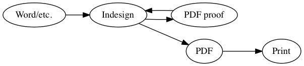
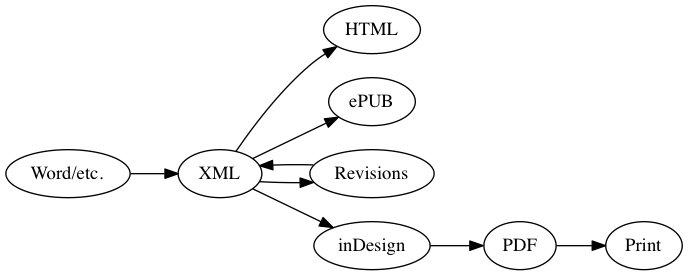
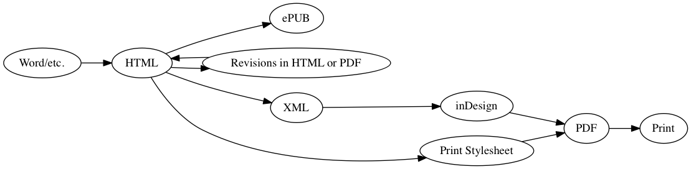

Hybrid Publishing Workflows
Print is not dead
It is a book, remember?

Print is no longer the default window to other media though—it is the screen that has taken that place. Yet print and screen are in a constant dialog. Buy ‘Post-Digital Print: The Mutation of Publishing Since 1894’ from our friends at Onomatopee, and download the PDF from our friends at Monoskop.

Consult Silvio Lorusso’s Post-digital Publishing Archive.

Hybrid Publishing work-flows
The following schema shows how most small publishers in the cultural field work, and how many of you probably work as well:

After the original text is put into inDesign, proofs are done with PDF’s. The designer directly edits in inDesign. This means that not only the layout is stored in inDesign, but the canonical text ends up being stored there as well.
The problem with this workflow is that the inDesign file is not easily re-usable for other formats. One can generate a PDF, and people have been creating ePUBs with reasonable success in inDesign, but there is no way to generate proper HTML.
Most large publishers therefore follow a different model. Before starting to do the layout, they convert their source document into a format called XML. XML is way of storing documents with tags, just like HTML, except that businesses can make up their own tags that fit their workflow. Publishers might use some existing XML standard, or make up their own.

InDesign allows to read in XML. A certain tag can be coupled to a certain paragraph style. The key in this workflow is that inDesign can watch the XML document for changes, and update the document whenever the XML changes. So instead of correcting text and typos in inDesign, you do it in the XML document. A large publisher might also employ an interface to edit the source document, and a form of archiving and revision control to track the changes.
A publisher will also set up a workflow to convert the XML to HTML, and to ePUB (based in part on the HTML). This workflow is known as ‘single source’, and its largest advantage is that a change in the source text is automatically reproduced throughout all mediums. The downsides however, are also clear. This workflow calls for a lot of technological infrastructure. It requires knowledge within the organisation of myriad different technologies, and most smaller publishers don’t have dedicted technical staff. A large publisher might have parts of this workflow custom built; a small publisher won’t be able to afford this. Finally, even though they use a same source text, the design for the HTML and the print versions are decuopled and have to be imagined seperately—a small publisher might not have the time.

A more feasible workflow, is to have HTML at the core. HTML can both be used as a ***
HTML and CSS also offer the advantage of being simple, text-based formats that allow collaboration. Class 4A already learned about the collaboration methods employed by software developers, with Git and Github, and class 4B will do so in this block’s coding class.
Your will work on (the design of your) thesis in the form of a series of HTML and CSS files, potentially using JavaScript for interactivity. You will store these files on Github, and you will make sure that you create a stylesheet that creates an appropriate print output and screen display. Optionally, you will be able to use inDesign by feeding in the HTML.